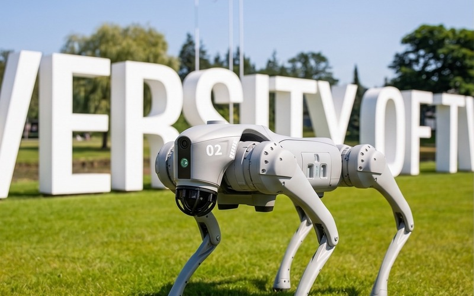
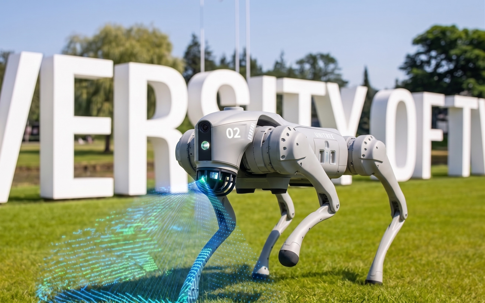
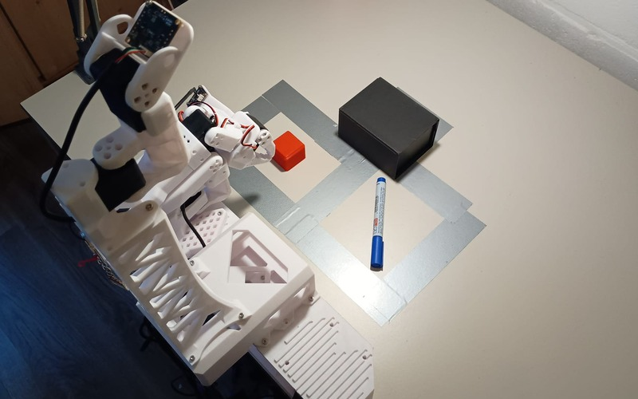
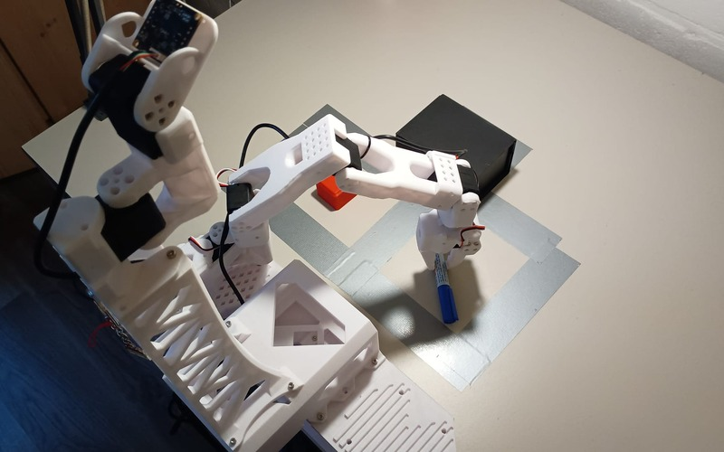

Farhad Hoseyni
I'm
About

AI and Robotics Engineer working on computer vision, robot learning, and practical intelligent systems.
I work on computer vision, deep learning, and robotic manipulation to solve real-world
problems in industrial automation and healthcare. Currently, I am pursuing my Master's
in AI and Robotics at the University of Twente and working as a Computer Vision and
Robotic Engineer at the Fraunhofer Innovation Platform.
My background combines classical control engineering (B.Sc. in Electrical and Control
Engineering from K. N. Toosi University of Technology with a minor in Computer
Engineering) with practical machine learning: building Vision-Language-Action (VLA)
robot policies, sub-millimeter 3D bin-picking systems, and clinical triage tools for
medical imaging.
Education
K. N. Toosi University of Technology
- Bachelor's Degree in Electrical and Control Engineering
- Minor Degree in Computer Engineering
- Sep. 2019 to Sep. 2024
- Grade: 18.33 / 20 (Ranked 6th in entrance)
University of Twente
- Master's Degree in AI and Robotics
- Specialization in Software and Algorithm AI
- Sep. 2025 to Present
- Enschede, Netherlands
Professional Experience
Industry roles and technical projects across robotics, computer vision, and medical imaging
Research & Projects
Core technical tracks across robotics, robot learning, and foundation vision. Click a card to explore sub-projects.


3 Sub-ProjectsMobile Robotics & Autonomous Navigation
Unitree Go2 LiDAR/Visual SLAM, RELBot firm real-time Xenomai tracking, and JIWY FPGA/ARM servo control.


2 Sub-ProjectsVLA & Generative AI for Robot Learning
Intent-conditioned SmolVLA manipulation on LeRobot SO-101 and 1-step Flow Matching (MeanFlow) on Push-T benchmark.

 3 Sub-Projects
3 Sub-Projects
AI for Image Processing & Foundation Vision
YoDINO zero-annotation anomaly AI, 2D Gaussian Splatting counting, MoCA PEFT screening, and KAN review.
Publications
Peer-reviewed conference proceedings and preprint publications.